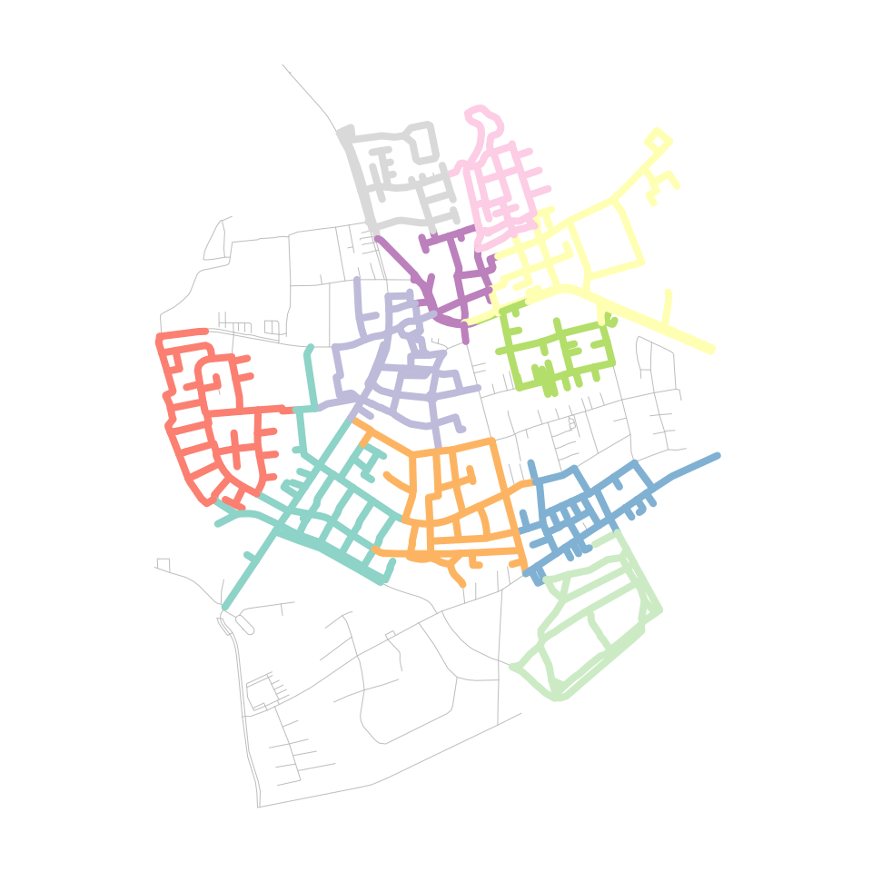
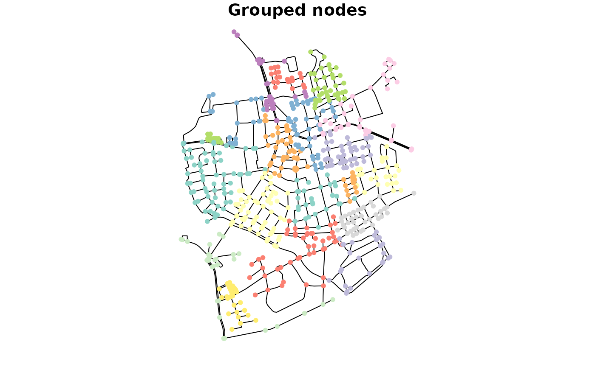

In some of the previous vignettes they were already mentioned here and there: spatial morpher functions. This vignette describes in more detail what they are and how to use them.
Morphing networks is a functionality that has its roots in tidygraph. It allows you to temporarily change the topology of the original network with the tidygraph::morph() verb, perform some actions on this “morphed state” of the network using dplyr verbs, and finally merge the changes back into the original network with the tidygraph::unmorph() verb. How the topology is changed during morphing depends on the used morpher function, which you provide to tidygraph::morph().
You can choose between a wide range of available morpher functions in tidygraph. The names of these functions all start with to_. The sfnetworks package adds a set of dedicated spatial morphers, having names starting with to_spatial_. They will be presented later in this vignette. Lets first show a practical example to get a better idea of how morphing can be useful.
In network analysis, community detection algorithms allow you to discover cohesive groups in networks, based on specific network properties. There is a large offer of (wrappers around) such algorithms in tidygraph, see here. Most of them are intended for and can only be applied to the nodes. For example, the often used Louvain algorithm, that seeks to optimize modularity of the partition.
But what if we want to detect communities within edges? Then, the tidygraph::to_linegraph() morpher comes in handy. It converts a network into its linegraph, where nodes become edges and edges become nodes. That is, we can morph the network into its linegraph, run the community detection algorithm on the nodes of the morphed state, attach to each node information about the group it is assigned to, and automatically merge those changes back into the edges of the original network.
net = as_sfnetwork(roxel, directed = FALSE) %>%
st_transform(3035)
grouped_net = net %>%
morph(to_linegraph) %>%
mutate(group = group_louvain()) %>%
unmorph()
grouped_net#> # A sfnetwork with 701 nodes and 851 edges
#> #
#> # CRS: EPSG:3035
#> #
#> # An undirected multigraph with 14 components with spatially explicit edges
#> #
#> # Node Data: 701 x 1 (active)
#> # Geometry type: POINT
#> # Dimension: XY
#> # Bounding box: xmin: 4150707 ymin: 3206375 xmax: 4152367 ymax: 3208565
#> geometry
#> <POINT [m]>
#> 1 (4151491 3207923)
#> 2 (4151474 3207946)
#> 3 (4151398 3207777)
#> 4 (4151370 3207673)
#> 5 (4151408 3207539)
#> 6 (4151421 3207592)
#> # … with 695 more rows
#> #
#> # Edge Data: 851 x 6
#> # Geometry type: LINESTRING
#> # Dimension: XY
#> # Bounding box: xmin: 4150707 ymin: 3206375 xmax: 4152367 ymax: 3208565
#> from to name type geometry group
#> <int> <int> <chr> <fct> <LINESTRING [m]> <int>
#> 1 1 2 Havixbecker … residen… (4151491 3207923, 4151474 3207946) 10
#> 2 3 4 Pienersallee seconda… (4151398 3207777, 4151390 3207727, 4… 3
#> 3 5 6 Schulte-Bern… residen… (4151408 3207539, 4151417 3207573, 4… 3
#> # … with 848 more rows
# The algorithm detected 34 communities.
grouped_net %>%
activate("edges") %>%
pull(group) %>%
unique() %>%
length()
#> [1] 34In all grouping functions in tidygraph, the group index 1 belongs the largest group, the index 2 to the second largest group, et cetera. Lets plot only the first third of the 34 groups, to keep the plot clear.
plot(st_geometry(net, "edges"), col = "grey", lwd = 0.5)
grouped_net %>%
activate("edges") %>%
st_as_sf() %>%
transmute(group = as.factor(group)) %>%
filter(group %in% c(1:11)) %>%
plot(lwd = 4, add = TRUE)
Internally, a morphed state of a network is a list, in which each element is a network on its own. Some morphers create a list with only a single element, like the linegraph example above, while others create a list with multiple elements. For example, the tidygraph::to_components() morpher splits the original network into its unconnected components, storing each component as a separate network in the list, with the first element being the largest component.
morphed_net = morph(net, to_components)
morphed_net#> # A sfnetwork temporarily morphed to a components representation
#> #
#> # Original graph is an undirected multigraph with 14 components
#> # consisting of 701 nodes and 851 edges
#> # with CRS EPSG:3035
#>
class(morphed_net)
#> [1] "morphed_sfnetwork" "morphed_tbl_graph" "list"
length(morphed_net)
#> [1] 14All dplyr verbs for which a tbl_graph method exists can also be applied to a morphed state. Technically, that means that the same operation is applied to each element in the list. In sfnetworks, it is also possible to use sf::st_join() and sf::st_filter() on morphed states of networks.
The mapping back to the original network is stored in .tidygraph_node_index and .tidygraph_edge_index columns, for nodes and edges respectively. These columns contain the indices (i.e. rownumber) of the original nodes and edges. During unmorphing these indices are used to join the changes made in the morphed state back into the original network. A dplyr::left_join() semantic is applied here. That means that the network has the same number of nodes and edges after unmorphing as it had before morphing, no matter if either the morpher function or the subsequent operations on the morphed state added or removed any nodes or edges. Whenever an original node or edge index occurs more than once in a morphed state, only the information added to its first instance is merged back into the original network.
Morphing is meant to make temporary changes to your network. However, what if you want to make lasting changes? Good news! The same morpher functions that are used for temporary conversions during morphing can be used for lasting conversions when you provide them to the tidygraph::convert() verb instead. In that case, the morphed state of the original network will be returned as a new network itself. This is mainly meant for those morpher functions that produce a morphed state with a single element. Whenever the morphed state consists of multiple elements, only one of them is returned as the new network. By default that is the first one, but you can pick an element yourself by setting the .select argument.
# Converting the network into its largest component.
convert(net, to_components)#> # A sfnetwork with 675 nodes and 838 edges
#> #
#> # CRS: EPSG:3035
#> #
#> # An undirected multigraph with 1 component with spatially explicit edges
#> #
#> # Node Data: 675 x 2 (active)
#> # Geometry type: POINT
#> # Dimension: XY
#> # Bounding box: xmin: 4150707 ymin: 3206375 xmax: 4152367 ymax: 3208565
#> geometry .tidygraph_node_index
#> <POINT [m]> <int>
#> 1 (4151491 3207923) 1
#> 2 (4151474 3207946) 2
#> 3 (4151398 3207777) 3
#> 4 (4151370 3207673) 4
#> 5 (4151408 3207539) 5
#> 6 (4151421 3207592) 6
#> # … with 669 more rows
#> #
#> # Edge Data: 838 x 6
#> # Geometry type: LINESTRING
#> # Dimension: XY
#> # Bounding box: xmin: 4150707 ymin: 3206375 xmax: 4152367 ymax: 3208565
#> from to name type geometry .tidygraph_edge_…
#> <int> <int> <chr> <fct> <LINESTRING [m]> <int>
#> 1 1 2 Havixbec… reside… (4151491 3207923, 4151474 320… 1
#> 2 3 4 Pienersa… second… (4151398 3207777, 4151390 320… 2
#> 3 5 6 Schulte-… reside… (4151408 3207539, 4151417 320… 3
#> # … with 835 more rows
# Converting the network into its smallest component.
convert(net, to_components, .select = 14)#> # A sfnetwork with 2 nodes and 1 edges
#> #
#> # CRS: EPSG:3035
#> #
#> # An unrooted tree with spatially explicit edges
#> #
#> # Node Data: 2 x 2 (active)
#> # Geometry type: POINT
#> # Dimension: XY
#> # Bounding box: xmin: 4151344 ymin: 3207931 xmax: 4151358 ymax: 3207979
#> geometry .tidygraph_node_index
#> <POINT [m]> <int>
#> 1 (4151344 3207979) 455
#> 2 (4151358 3207931) 456
#> #
#> # Edge Data: 1 x 6
#> # Geometry type: LINESTRING
#> # Dimension: XY
#> # Bounding box: xmin: 4151344 ymin: 3207931 xmax: 4151358 ymax: 3207979
#> from to name type geometry .tidygraph_edge_…
#> <int> <int> <chr> <fct> <LINESTRING [m]> <int>
#> 1 1 2 NA servi… (4151344 3207979, 4151348 3207964,… 262
As can be seen, the .tidygraph_node_index and .tidygraph_edge_index columns are present in the network returned by tidygraph::convert(). If you rather don’t have that, set .clean = TRUE.
A lot of morpher functions are offered by tidygraph. See the overview of them here. Most of them should work without problems on sfnetworks, and can be useful for spatial network analysis. On top of that offer, sfnetworks adds some additional spatial morphers that fit use-cases for which tidygraph does not have an implemented morpher function. See the overview of them here. Below they will all be shortly introduced.
The to_spatial_directed() morpher turns an undirected network into a directed one based on the direction given by the linestring geometries of the edges. Hence, from the node corresponding to the first point of the linestring, to the node corresponding to the last point of the linestring. This in contradiction to tidygraph::to_directed(), which bases the direction on the node indices given in the to and from columns of the edges. In undirected networks the lowest node index is always used as from index, no matter the order of endpoints in the edges’ linestring geometry. Therefore, the from and to node indices of an edge may not always correspond to the first and last endpoint of the linestring geometry, and to_spatial_directed() gives different results as tidygraph::to_directed().
net %>%
activate("nodes") %>%
mutate(bc_undir = centrality_betweenness()) %>%
morph(to_spatial_directed) %>%
mutate(bc_dir = centrality_betweenness()) %>%
unmorph() %>%
mutate(bc_diff = bc_dir - bc_undir) %>%
arrange(bc_diff, desc())#> # A sfnetwork with 701 nodes and 851 edges
#> #
#> # CRS: EPSG:3035
#> #
#> # An undirected multigraph with 14 components with spatially explicit edges
#> #
#> # Node Data: 701 x 4 (active)
#> # Geometry type: POINT
#> # Dimension: XY
#> # Bounding box: xmin: 4150707 ymin: 3206375 xmax: 4152367 ymax: 3208565
#> geometry bc_undir bc_dir bc_diff
#> <POINT [m]> <dbl> <dbl> <dbl>
#> 1 (4151721 3206809) 39283. 7596 -31687.
#> 2 (4151732 3207017) 33800. 4376. -29424.
#> 3 (4151702 3207456) 70243. 42322. -27920.
#> 4 (4151771 3207186) 45365. 18909. -26456.
#> 5 (4151599 3207942) 30698. 4908 -25790.
#> 6 (4151617 3207870) 30574. 5254 -25320.
#> # … with 695 more rows
#> #
#> # Edge Data: 851 x 5
#> # Geometry type: LINESTRING
#> # Dimension: XY
#> # Bounding box: xmin: 4150707 ymin: 3206375 xmax: 4152367 ymax: 3208565
#> from to name type geometry
#> <int> <int> <chr> <fct> <LINESTRING [m]>
#> 1 202 536 Havixbecker St… resident… (4151491 3207923, 4151474 3207946)
#> 2 14 96 Pienersallee secondary (4151398 3207777, 4151390 3207727, 4151…
#> 3 38 95 Schulte-Bernd-… resident… (4151408 3207539, 4151417 3207573, 4151…
#> # … with 848 more rows
If your original network is spatially implicit (i.e. edges do not have a geometry list column), the to_spatial_explicit() morpher explicitizes the edges by creating a geometry list column for them. If the edges table can be directly converted to an sf object using sf::st_as_sf(), extra arguments can be provided as ..., which will be forwarded to sf::st_as_sf() internally. Otherwise, straight lines will be drawn between the end nodes of each edge. The morphed state contains a single sfnetwork.
implicit_net = st_set_geometry(activate(net, "edges"), NULL)
explicit_net = convert(implicit_net, to_spatial_explicit)
plot(implicit_net, draw_lines = FALSE, main = "Implicit edges")
plot(explicit_net, main = "Explicit edges")
The to_spatial_shortest_paths morpher limits the original network to those nodes and edges that are part of the shortest path between two nodes. Just as with the other shortest path calculation functionalities presented in the Routing vignette, besides node indices or names, any geospatial point (as sf or sfc object) can be provided as from and to node. Internally, such points will be snapped to their nearest node before calculating the shortest path.
The morpher only accepts a single from node. If also a single to node is provided, the morphed state of the network contains a single sfnetwork. However, it is also possible to provide multiple to nodes. Then, the morphed state of the network contains multiple sfnetworks, one for each from-to combination.
net %>%
activate("edges") %>%
convert(to_spatial_shortest_paths, from = 1, to = 100, weights = edge_length())#> # A sfnetwork with 26 nodes and 25 edges
#> #
#> # CRS: EPSG:3035
#> #
#> # An unrooted tree with spatially explicit edges
#> #
#> # Edge Data: 25 x 6 (active)
#> # Geometry type: LINESTRING
#> # Dimension: XY
#> # Bounding box: xmin: 4151193 ymin: 3207076 xmax: 4151531 ymax: 3207923
#> from to name type geometry .tidygraph_edge_…
#> <int> <int> <chr> <fct> <LINESTRING [m]> <int>
#> 1 2 3 Pienersa… second… (4151398 3207777, 4151390 320… 2
#> 2 6 7 Wilhelm-… reside… (4151350 3207279, 4151312 320… 20
#> 3 9 11 NA path (4151322 3207076, 4151324 320… 96
#> 4 11 12 NA path (4151324 3207081, 4151325 320… 97
#> 5 13 14 Am Mecke… reside… (4151323 3207085, 4151345 320… 107
#> 6 8 10 Pienersa… second… (4151340 3207612, 4151337 320… 115
#> # … with 19 more rows
#> #
#> # Node Data: 26 x 2
#> # Geometry type: POINT
#> # Dimension: XY
#> # Bounding box: xmin: 4151193 ymin: 3207076 xmax: 4151531 ymax: 3207923
#> geometry .tidygraph_node_index
#> <POINT [m]> <int>
#> 1 (4151491 3207923) 1
#> 2 (4151398 3207777) 3
#> 3 (4151370 3207673) 4
#> # … with 23 more rows
new_net = net %>%
activate("edges") %>%
morph(to_spatial_shortest_paths, from = 1, to = seq(10, 100, 10), weights = edge_length()) %>%
mutate(in_paths = TRUE) %>%
unmorph()
new_net %>%
st_geometry() %>%
plot()
new_net %>%
filter(in_paths) %>%
st_geometry() %>%
plot(col = "red", lwd = 4, add = TRUE)The to_spatial_simple() morpher removes loop edges and parallel edges from the original network. The morphed state contains a single sfnetwork. See the Network pre-processing and cleaning vignette for more details.
The to_spatial_smooth() morpher creates a smoothed version of the original network by iteratively removing pseudo nodes. In the case of directed networks, pseudo nodes are those nodes that have only one incoming and one outgoing edge. In undirected networks, pseudo nodes are those nodes that have two incident edges. Connectivity of the network is preserved by concatenating the incident edges of each removed pseudo node. The morphed state contains a single sfnetwork. See the Network pre-processing and cleaning vignette for more details.
NOTE: This function is still experimental. It needs more testing and may be slow on large networks
The to_spatial_subdivision() morpher creates a subdivision of the original network by subdividing edges at each interior point that is equal to any other interior or boundary point of other edges. Interior points in this sense are those points that are included in a linestring geometry feature but are not endpoints of it, while boundary points are the endpoints of the linestrings. The network is reconstructed after subdivision such that connections are created at the points of subdivision. The morphed state contains a single sfnetwork. See the Network pre-processing and cleaning vignette for more details.
The to_spatial_subset() morpher takes a subset of the network by applying a spatial filter. A spatial filter is a filter on a geometry list column based on a spatial predicate. The morphed state contains a single sfnetwork. We can use this for example to spatially join information only to a spatial subset of the nodes in the network. A tiny example just to get an idea of how this would work:
codes = net %>%
st_make_grid(n = c(2, 2)) %>%
st_as_sf() %>%
mutate(post_code = seq(1000, 1000 + n() * 10 - 10, 10))
points = st_geometry(net, "nodes")[c(2, 3)]
net %>%
morph(to_spatial_subset, points, .pred = st_equals) %>%
st_join(codes, join = st_intersects) %>%
unmorph()
#> Subsetting by nodes#> # A sfnetwork with 701 nodes and 851 edges
#> #
#> # CRS: EPSG:3035
#> #
#> # An undirected multigraph with 14 components with spatially explicit edges
#> #
#> # Node Data: 701 x 2 (active)
#> # Geometry type: POINT
#> # Dimension: XY
#> # Bounding box: xmin: 4150707 ymin: 3206375 xmax: 4152367 ymax: 3208565
#> geometry post_code
#> <POINT [m]> <dbl>
#> 1 (4151491 3207923) NA
#> 2 (4151474 3207946) 1020
#> 3 (4151398 3207777) 1020
#> 4 (4151370 3207673) NA
#> 5 (4151408 3207539) NA
#> 6 (4151421 3207592) NA
#> # … with 695 more rows
#> #
#> # Edge Data: 851 x 5
#> # Geometry type: LINESTRING
#> # Dimension: XY
#> # Bounding box: xmin: 4150707 ymin: 3206375 xmax: 4152367 ymax: 3208565
#> from to name type geometry
#> <int> <int> <chr> <fct> <LINESTRING [m]>
#> 1 1 2 Havixbecker St… resident… (4151491 3207923, 4151474 3207946)
#> 2 3 4 Pienersallee secondary (4151398 3207777, 4151390 3207727, 4151…
#> 3 5 6 Schulte-Bernd-… resident… (4151408 3207539, 4151417 3207573, 4151…
#> # … with 848 more rows
If you want to apply the spatial filter to the edges instead of the nodes, either activate edges before morphing, or set subset_by = "edges".
For filters on attribute columns, use tidygraph::to_subgraph() instead. Again, a tiny fictional example just to get an idea of how this would work:
net = net %>%
activate("nodes") %>%
mutate(building = sample(c(TRUE,FALSE), n(), replace = TRUE))
net %>%
morph(to_subgraph, building) %>%
st_join(codes, join = st_intersects) %>%
unmorph()
#> Subsetting by nodes#> # A sfnetwork with 701 nodes and 851 edges
#> #
#> # CRS: EPSG:3035
#> #
#> # An undirected multigraph with 14 components with spatially explicit edges
#> #
#> # Node Data: 701 x 3 (active)
#> # Geometry type: POINT
#> # Dimension: XY
#> # Bounding box: xmin: 4150707 ymin: 3206375 xmax: 4152367 ymax: 3208565
#> geometry building post_code
#> <POINT [m]> <lgl> <dbl>
#> 1 (4151491 3207923) TRUE 1020
#> 2 (4151474 3207946) TRUE 1020
#> 3 (4151398 3207777) FALSE NA
#> 4 (4151370 3207673) FALSE NA
#> 5 (4151408 3207539) TRUE 1020
#> 6 (4151421 3207592) FALSE NA
#> # … with 695 more rows
#> #
#> # Edge Data: 851 x 5
#> # Geometry type: LINESTRING
#> # Dimension: XY
#> # Bounding box: xmin: 4150707 ymin: 3206375 xmax: 4152367 ymax: 3208565
#> from to name type geometry
#> <int> <int> <chr> <fct> <LINESTRING [m]>
#> 1 1 2 Havixbecker St… resident… (4151491 3207923, 4151474 3207946)
#> 2 3 4 Pienersallee secondary (4151398 3207777, 4151390 3207727, 4151…
#> 3 5 6 Schulte-Bernd-… resident… (4151408 3207539, 4151417 3207573, 4151…
#> # … with 848 more rows